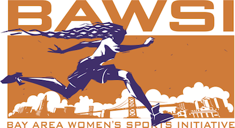

The Bay Area Women's Spors Initiative (BAWSI) is a public benefit, nonporfit corporation with a mission to create programs and partnerships through which women athelets bring health, hope and wholeness to our community. Founded in 2005 by Olympic and World Cup soccer stars Brandi CHastain and Fulie Foudy and Marlene Bjornsrud, former general manager of the San Jose CyberRays women's professional soccer team, BAWSI provides a meaningful path for women athletes to become a more visible and valued part for the the Bay Area sports culture.
BAWSI's History
The concept of BAWSI was inspored by one of the most spectular achievements in women's sports history and born out of one of its biggest disappointments...